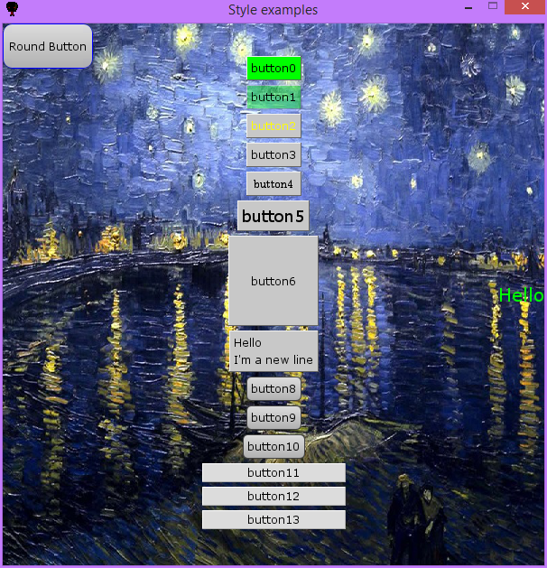

Examples -
Basic styling
Examples -
Basic styling
Full code
The code below shows a few ways to tune the appearance of your elements - size, colors, fonts, ... You can also see these functions summarized in the cheat sheet. Moreover, you can find a tutorial for writing your own design template here.
0
1
2
3
4
5
6
7
8
9
10
11
12
13
14
15
16
17
18
19
20
21
22
23
24
25
26
27
28
29
30
31
32
33
34
35
36
37
38
39
40
41
42
43
44
45
46
47
48
49
50
51
52
53
54
55
import thorpy
application = thorpy.Application((700, 700), "Style examples")
buttons = [thorpy.make_button("button"+str(i)) for i in range(8)]
buttons[0].set_main_color((0,255,0)) #slow method, to be used outside of a loop
buttons[1].set_main_color((0,255,0,100)) #with alpha value this time
buttons[2].set_font_color((255,255,0)) #slow method, to be used outside of a loop
buttons[3].set_font_color_hover((0, 255, 0)) #...
buttons[4].set_font("century") #may not work on your computer
buttons[5].set_font_size(18);buttons[5].scale_to_title()
buttons[6].set_size((100,100))
buttons[7].set_text("First line\nSecond line")
buttons[7].scale_to_title()
##use predefined theme
for theme_name in ["classic", "round", "human", "simple", "windows10"]:
thorpy.set_theme(theme_name)
button = thorpy.make_button("Theme name : " + theme_name)
button.scale_to_title()
buttons.append(button)
thorpy.theme.set_default_theme_as_current()
##A customized style
a_round_button = thorpy.Clickable("Custom round Button")
painter = thorpy.painters.optionnal.human.Human(size=(200,30),
radius_ext=0.5,
radius_int=0.4,
border_color=(0,0,255),
color=(100,100,255))
a_round_button.set_painter(painter)
a_round_button.finish()
buttons.append(a_round_button)
##Another customized style
##set default painter as ClassicFrame (same as used in theme 'classic')
thorpy.painterstyle.DEF_PAINTER = thorpy.painters.classicframe.ClassicFrame
thorpy.style.MARGINS = (50, 2) #set default margins
thorpy.style.COLOR_TXT_HOVER = (255,0,0)
button = thorpy.make_button("Another custom button")
buttons.append(button)
##text button
title = thorpy.make_text("Text only", font_size=22, font_color=(255,0,0))
title.stick_to("screen", "top", "top")
##To add shadows to a button, see effects.py in the examples folder.
background = thorpy.Background(image=thorpy.style.EXAMPLE_IMG, elements=buttons)
thorpy.store(background)
menu = thorpy.Menu([background, title])
menu.play()
application.quit()
{kind=link}